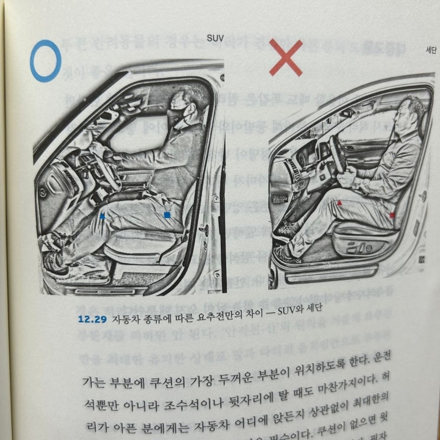
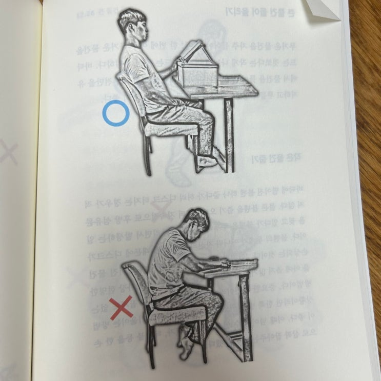
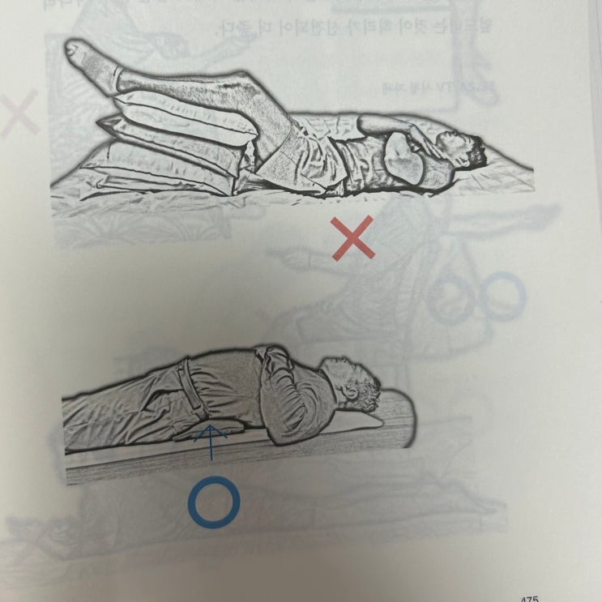

![[서평] 백년허리 이미지 1](../../assets/images/note-34/p202-01.jpg)
뻐킹 허리디스크 (추간판 탈출증) 진단을 받고나서 블로그 이웃분들도 그렇고, 주변 지인분들께서도 정선근 교수와 백년 허리 책을 추천해 주셔서 주말간 다 읽어 보았다.
글씨도 크고 대부분 그림이고 중복되는 내용들도 많아 쉽게 쉽게 두 시간 정도면 읽을 수 있는 책 이었다.
책 자체는 쉽게 읽을 수 있었지만 그 배움은 상당하다.
책 내내 안좋은 자세들에 대해서 자주 설명이 나오는데 내가 사랑하는(?) 자세들이 꽤 많아서 놀랐다.
특히 내가 일할 때 자세가.. 허리 망치는 주범 자세였다니.. ㅠㅠ
잠잘 때 다리 밑에 높은 쿠션 올리고 자는 것도 안좋은 자세였고... ㅠㅠ
내가 운전할 때 자세도 안좋은 자세.
심지어 지금 블로그 글 쓰고 있는 자세도 상당히 안좋은 자세.
아뉘 이거 하지 말라는 자세를 다 하고 있으니 허리 디스크가 찢어질 만도 하구먼. -_-



허리 통증에 대해서 이해할 수 있었고, 어떤 자세가 나쁜지도 배울 수 있었고, 척추 위생(=바른자세) 을 잘 지킨다면 앞으로 건강한 허리로 돌아갈 수 도 있음을 배웠던 좋은 책이었다.
내용이 워낙 간단하니 빌려보아도 좋고 원하면 구입해서 집에 두고두고 보아도 좋은 책이다.
끝.